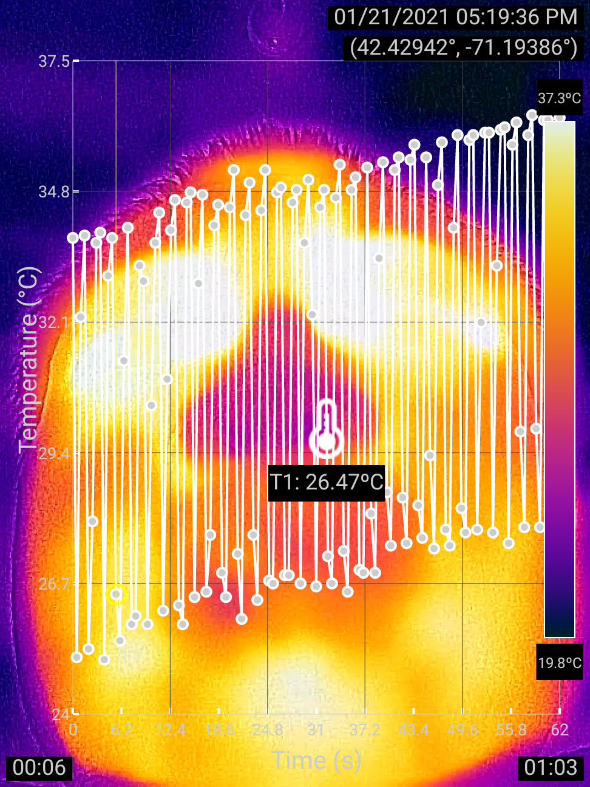

|
 |
Thermographer: Xudong Huang Description: Breathing in cool air and breathing out warm air cause the nostrils to change temperature periodically, which can be used to measure respiration rate. This experiment shows the rate after exercise. Tap to download the video. |